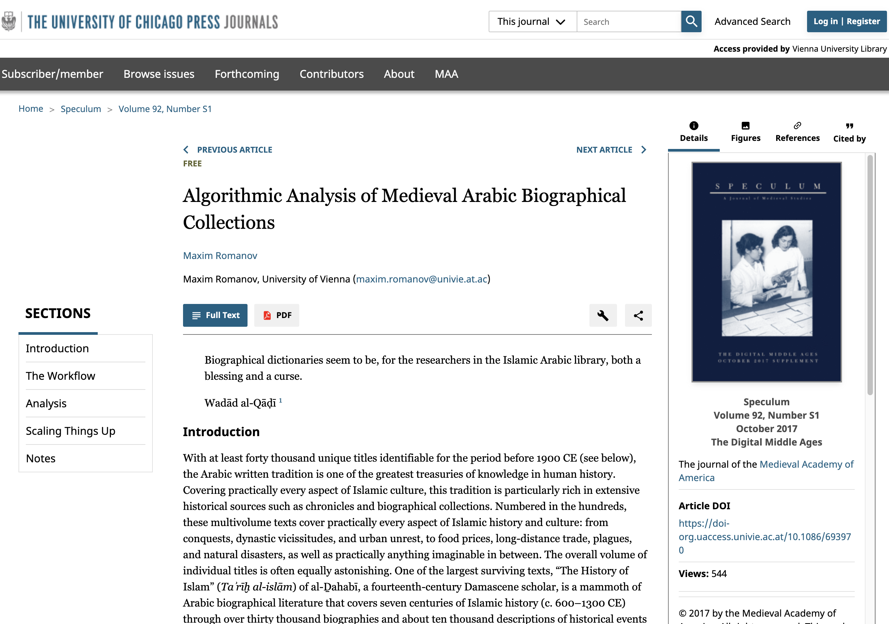
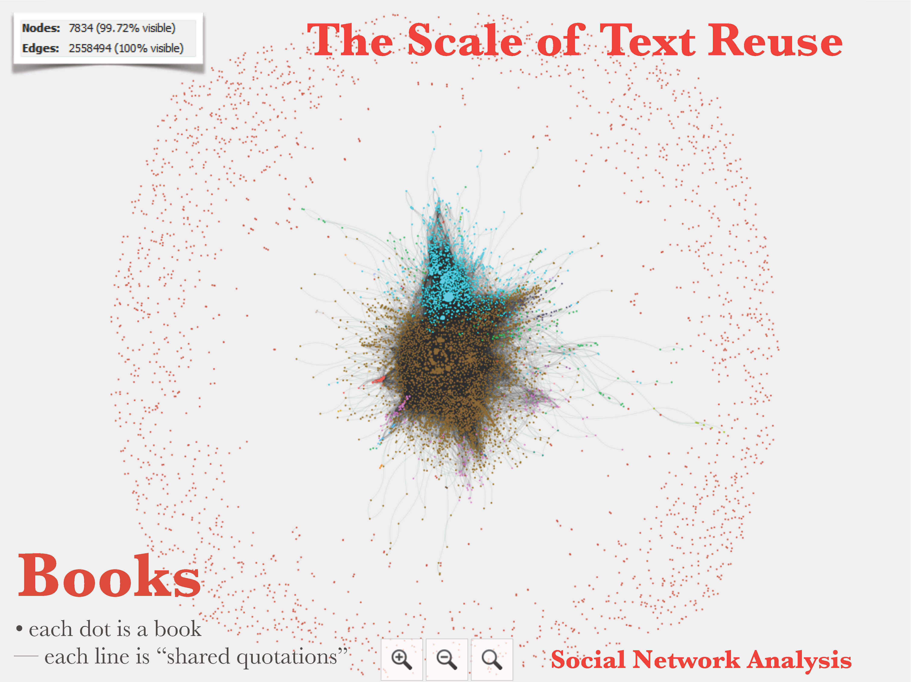
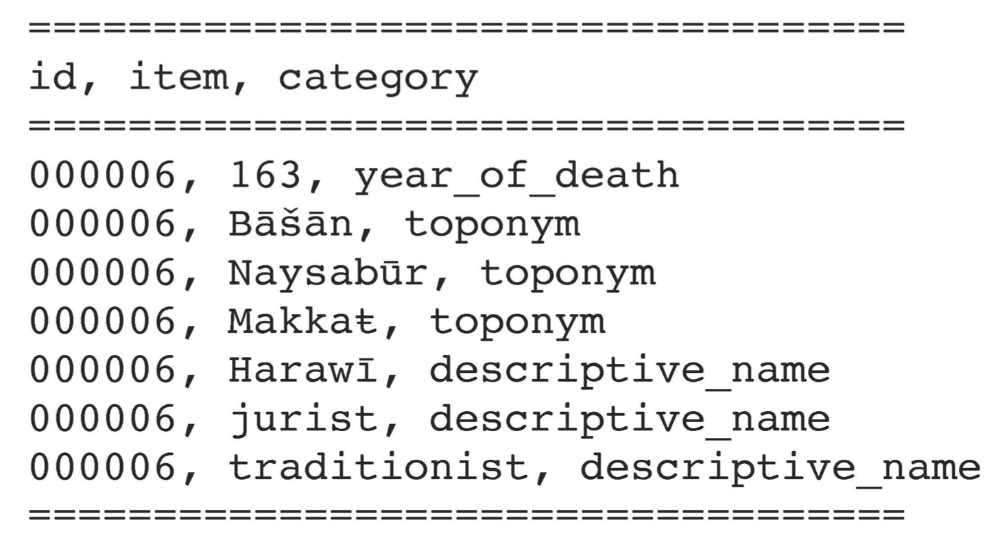
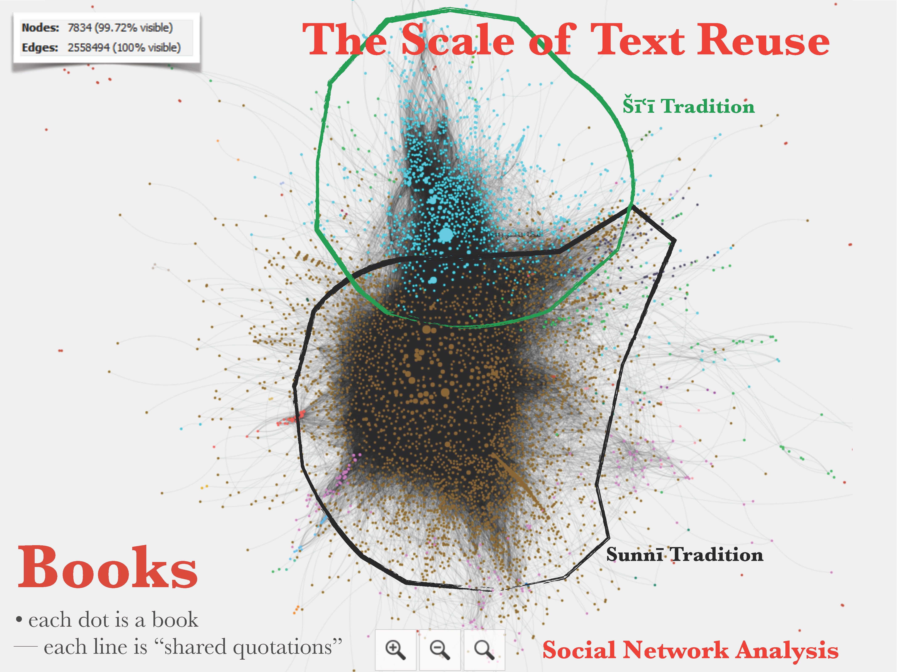
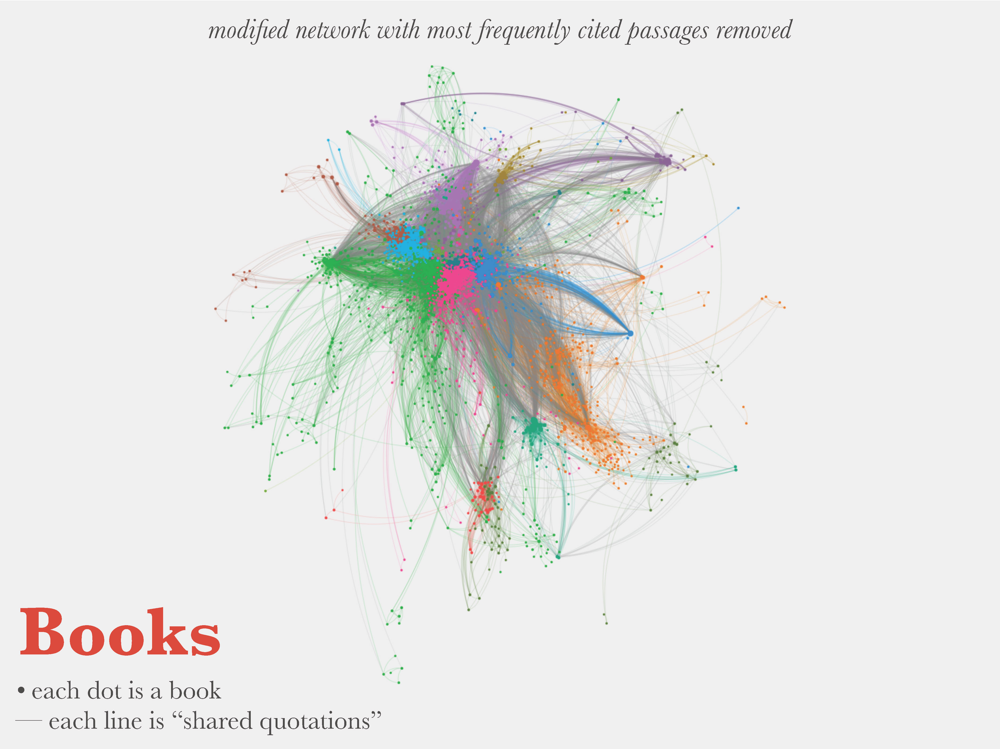

background-image: url(./images/bg_default_2022_eis.png) background-size: contain class: center, middle # *Made by People, Tied by People* ### Modeling Islamic Urban Networks<br> from Biographical Data (ca. 600-1300 CE) ⥈ **Maxim Romanov**<br> *Junior Research Group Leader<br> Emmy Noether Research Group<br> “The Evolution of Islamic Societies (c.600-1600 CE):<br> Algorithmic Analysis into Social History”* Universität Hamburg ⥈ April 20, 2022 <br> <br> <br> <br> --- background-image: url(./images/bg_default_2022a_eis.png) background-size: contain class: middle **_Abstract_**: With at least 500,000 biographical records, Arabic biographical collections offer a significant amount of data that can be used as a proxy for modeling a wide variety of historical processes that shaped the premodern Islamic world. For example, most biographies have at least some geographical data—toponymic descriptive names (*nisbaŧ*s) and toponyms—from which one can construct a geographical network of almost any given biographee. Individual geographical networks are not particularly interesting. However, combined into more complex objects, this data can open valuable perspectives on cities, regions, as well as the entirety of the Islamic world. The analysis of such networks can show us which cities were connected and how these connections changed over time. By re-grouping this data, we can model connections among provinces, revealing their "orientations". Through community detection algorithms, we can also discover more organically connected regions of the Islamic world. The presentation will explain the methodological approach, overview some of the current results and near-future prospects, and address major historiographical and methodological issues of this approach. --- background-image: url(./images/althurayya01.jpeg) background-size: contain exclude: true ## *Routes of Islam* .footnote[<https://althurayya.github.io/> (G. Cornu’s «Atlas...»)] --- background-image: url(./images/althurayya02.jpeg) background-size: contain ## *Routes of Islam* .footnote[<https://althurayya.github.io/> (G. Cornu’s «Atlas...»)] --- background-image: url(./images/althurayya03.jpeg) background-size: contain ## *Routes of Islam* .footnote[<https://althurayya.github.io/> (G. Cornu’s «Atlas...»)] --- background-image: url(./images/bg_default_2022a_eis.png) background-size: contain ### Romanov, Maxim. 2017. “Algorithmic Analysis of Medieval Arabic Biographical Collections.” *Speculum* 92 (S1): S226–46. https://doi.org/10.1086/693970.  --- background-image: url(./images/bg_default_2022a_eis.png) background-size: contain class: middle # *Algorithhmic Analysis (A2)* ## al-Ḏahabī (d. 748/1348) and his _Taʾrīḫ al-islām_ (“The History of Islam”) ### > *c.* 30,000 biographies; 700 AH years of Islamic History • **Local LOD-like Data Model**<br> • *Prosopographical Data:* • descriptive names (Ar. *nisbaŧ*) • places (toponyms) • dates<br> • *Descriptive Name Scheme:* • descriptive name • classification(s)<br> • *Toponymic Scheme:* • place • type • region • coordinates --- background-image: url(./images/bg_default_2022a_eis.png) background-size: contain ## *A2 Technical Principles* - data collection and its analysis should be driven by data mining (automated and semi-automated data extraction) and modeling of research questions through various proxies (abstractions); - data organization should rely on linkable elements and federated maintenance (e.g., an LOD-like data model, canonical/distributed text services, version control systems); - its technological complexity should be kept as “simple as possible, but not simpler” (for example, custom lightweight markdown, instead of heavy TEI XML); and - it can be considered sustainable, only if you can do it alone. --- background-image: url(./images/bg_default_2022a_eis.png) background-size: contain ## *A2 Concept: Iterative Process* <img src="./images/algorithmic_modeling.svg" alt="Drawing" style="width: 800px;"/> - bringing together: data curation, distant reading, and close reading --- background-image: url(./images/bg_default_2022a_eis.png) background-size: contain ## *A2: Text-Mining > Abstraction* <img src="./images/01.jpg" alt="Drawing" style="width: 800px;"/> --- background-image: url(./images/bg_default_2022a_eis.png) background-size: contain ## *A2: Text-Mining > Tidy Data Model (with Triples)*  --- background-image: url(./images/bg_default_2022a_eis.png) background-size: contain ## *A2: Text-Mining > Tidy Data Model (with Triples)* - **Subject > Verb > Object**: *id > category > item* * **000006** `has year_of_death` *163* * **000006** `has toponym` *Bāšān* * **000006** `has toponym` *Makkaŧ* * **000006** `has descriptive_name` *Harawī* (> links to onomastic > toponymic data) * **000006** `has descriptive_name` *jurist* (> links to onomastic data) * **000006** `has descriptive_name` *traditionist* (> links to onomastic data)  --- background-image: url(./images/bg_default_2022a_eis.png) background-size: contain ## *A2: Text-Mining > LOD-Like Model*  --- background-image: url(./images/bg_default_2022a_eis.png) background-size: contain ## *A2: Text-Mining > LOD-Like Model*  --- background-image: url(./images/map03.png) background-size: contain ## *A2: Geographical Model — Orbis-like* <br><br><br><br><br><br><br><br><br><br><br><br><br><br><br><br> - al-Ṯurayyā Project: <a href="https://althurayya.github.io">althurayya.github.io</a> - Inspired by and based on (code reuse): <a href="https://althurayya.github.io">https://orbis.stanford.edu/</a> --- background-image: url(./images/map03a.png) background-size: contain ## *A2: Geographical Model — Urban* <br><br><br><br><br><br><br><br><br><br><br><br><br><br><br><br> - al-Ṯurayyā Project: <a href="https://althurayya.github.io">althurayya.github.io</a> --- background-image: url(./images/map04.png) background-size: contain ## *A2: Geographical Model — Provincial* <br><br><br><br><br><br><br><br><br><br><br><br><br><br><br><br> - al-Ṯurayyā Project: <a href="https://althurayya.github.io">althurayya.github.io</a> --- background-image: url(./images/AlthurayyaBased_Map_Regions_ALLTOPO.png) background-size: contain ## Islamic World: *all places* .footnote[...] --- background-image: url(./images/AlthurayyaBased_Map_Regions.png) background-size: contain ## Islamic World: *minus minor places* .footnote[*like waystations, villages, sites, waters*] --- background-image: url(./images/AlthurayyaBased_Map_Regions_TI.png) background-size: contain ## Islamic World: _Taʾrīḫ al-islām_ .footnote[...] --- background-image: url(./images/bg_default_2022a_eis.png) background-size: contain class: center, middle # Provincial Connections --- background-image: url(./images/TI_InterregionalConns_700Y_100Y_000_100.png) background-size: contain ## *A2: Cultural Connections - Provincial* .footnote[...] --- background-image: url(./images/TI_InterregionalConns_700Y_100Y_100_200.png) background-size: contain ## *A2: Cultural Connections - Provincial* .footnote[...] --- background-image: url(./images/TI_InterregionalConns_700Y_100Y_200_300.png) background-size: contain ## *A2: Cultural Connections - Provincial* .footnote[...] --- background-image: url(./images/TI_InterregionalConns_700Y_100Y_300_400.png) background-size: contain ## *A2: Cultural Connections - Provincial* .footnote[...] --- background-image: url(./images/TI_InterregionalConns_700Y_100Y_400_500.png) background-size: contain ## *A2: Cultural Connections - Provincial* .footnote[...] --- background-image: url(./images/TI_InterregionalConns_700Y_100Y_500_600.png) background-size: contain ## *A2: Cultural Connections - Provincial* .footnote[...] --- background-image: url(./images/TI_InterregionalConns_700Y_100Y_600_700.png) background-size: contain ## *A2: Cultural Connections - Provincial* .footnote[...] --- background-image: url(./images/bg_default_2022a_eis.png) background-size: contain class: center, middle ## *Made by People*: Urban Centers — their prominence (*“natives”*: *nisbaŧ*) — their attractiveness (*visitors*: mention) --- background-image: url(./images/_MADINA_396E244N_S_TI_0_700.png) background-size: contain ## *A2: Urban Centers — Early* .footnote[...] --- background-image: url(./images/_KUFA_443E320N_S_TI_0_700.png) background-size: contain ## *A2: Urban Centers — Early* .footnote[...] --- background-image: url(./images/_BASRA_477E304N_S_TI_0_700.png) background-size: contain ## *A2: Urban Centers — Early* .footnote[...] --- background-image: url(./images/_MAKKA_398E213N_S_TI_0_700.png) background-size: contain ## *A2: Urban Centers — Early* .footnote[...] --- background-image: url(./images/_BAGHDAD_443E333N_S_TI_0_700.png) background-size: contain ## *A2: Urban Centers — Middle* .footnote[...] --- background-image: url(./images/_NAYSABUR_587E361N_S_TI_0_700.png) background-size: contain ## *A2: Urban Centers — Middle* .footnote[...] --- background-image: url(./images/_ISBAHAN_516E326N_S_TI_0_700.png) background-size: contain ## *A2: Urban Centers — Middle* .footnote[...] --- background-image: url(./images/_QURTUBA_047W379N_S_TI_0_700.png) background-size: contain ## *A2: Urban Centers — Middle* .footnote[...] --- background-image: url(./images/_DIMASHQ_363E335N_S_TI_0_700.png) background-size: contain ## *A2: Urban Centers — Late* .footnote[...] --- background-image: url(./images/_ISKANDARIYYA_299E311N_S_TI_0_700.png) background-size: contain ## *A2: Urban Centers — Late* .footnote[...] --- background-image: url(./images/_HAMA_367E351N_S_TI_0_700.png) background-size: contain ## *A2: Urban Centers — Late* .footnote[...] --- background-image: url(./images/bg_default_2022a_eis.png) background-size: contain class: center, middle ## *Tied by People*: Urban Centers — **urban clusters (SNA with *Louvain* algorithm)** — ego networks (connections of individual cities) --- background-image: url(./images/TI_UrbanClusters_700Y_louvain_000_100.png) background-size: contain ## *A2: Urban Clusters* .footnote[...] --- background-image: url(./images/TI_UrbanClusters_700Y_louvain_100_200.png) background-size: contain ## *A2: Urban Clusters* .footnote[...] --- background-image: url(./images/TI_UrbanClusters_700Y_louvain_200_300.png) background-size: contain ## *A2: Urban Clusters* .footnote[...] --- background-image: url(./images/TI_UrbanClusters_700Y_louvain_300_400.png) background-size: contain ## *A2: Urban Clusters* .footnote[...] --- background-image: url(./images/TI_UrbanClusters_700Y_louvain_400_500.png) background-size: contain ## *A2: Urban Clusters* .footnote[...] --- background-image: url(./images/TI_UrbanClusters_700Y_louvain_500_600.png) background-size: contain ## *A2: Urban Clusters* .footnote[...] --- background-image: url(./images/TI_UrbanClusters_700Y_louvain_600_700.png) background-size: contain ## *A2: Urban Clusters* .footnote[...] --- background-image: url(./images/bg_default_2022a_eis.png) background-size: contain class: center, middle ## *Tied by People*: Urban Centers — urban clusters (SNA with *Louvain* algorithm) — **ego networks (connections of individual cities)** *Buḫāraŧ & Qurṭūbaŧ* --- background-image: url(./images/TI_UrbanEgoCluster_700Y_100__BUKHARA_644E398N_S__200_300.png) background-size: contain ## *A2: Ego Networks — Buḫāraŧ* .footnote[...] --- background-image: url(./images/TI_UrbanEgoCluster_700Y_100__BUKHARA_644E398N_S__300_400.png) background-size: contain ## *A2: Ego Networks — Buḫāraŧ* .footnote[...] --- background-image: url(./images/TI_UrbanEgoCluster_700Y_100__BUKHARA_644E398N_S__400_500.png) background-size: contain ## *A2: Ego Networks — Buḫāraŧ* .footnote[...] --- background-image: url(./images/TI_UrbanEgoCluster_700Y_100__BUKHARA_644E398N_S__500_600.png) background-size: contain ## *A2: Ego Networks — Buḫāraŧ* .footnote[...] --- background-image: url(./images/TI_UrbanEgoCluster_700Y_100__BUKHARA_644E398N_S__600_700.png) background-size: contain ## *A2: Ego Networks — Buḫāraŧ* .footnote[...] --- background-image: url(./images/TI_UrbanEgoCluster_700Y_100__QURTUBA_047W379N_S__200_300.png) background-size: contain ## *A2: Ego Networks — Qurṭūbaŧ* .footnote[...] --- background-image: url(./images/TI_UrbanEgoCluster_700Y_100__QURTUBA_047W379N_S__300_400.png) background-size: contain ## *A2: Ego Networks — Qurṭūbaŧ* .footnote[...] --- background-image: url(./images/TI_UrbanEgoCluster_700Y_100__QURTUBA_047W379N_S__400_500.png) background-size: contain ## *A2: Ego Networks — Qurṭūbaŧ* .footnote[...] --- background-image: url(./images/TI_UrbanEgoCluster_700Y_100__QURTUBA_047W379N_S__500_600.png) background-size: contain ## *A2: Ego Networks — Qurṭūbaŧ* .footnote[...] --- background-image: url(./images/TI_UrbanEgoCluster_700Y_100__QURTUBA_047W379N_S__600_700.png) background-size: contain ## *A2: Ego Networks — Qurṭūbaŧ* .footnote[...] --- background-image: url(./images/bg_default_2022a_eis.png) background-size: contain ## Some observations - the “biographical geography” is much narrower than administrative geography - connectivity across the Islamic world is complex and dynamic - the prominence of cities is constantly changing; some attract visitors, some don’t - connections cut across “provincial borders”, forming three or four major clusters: - *maġribī* (al-Andalus + al-Maġrib + Ifriqiyyā ± Miṣr); - *šāmī* (al-Šām ± Miṣr ± al-Jazīraŧ/Aqūr); - *irāqī* (centered on al-Irāq ± Ḫurasān); - *mašriqī* (centered on Ḫurasān ± al-Irāq ± Mā-warāʾ-l-nahr); - **NB:** Locations in the Jazīraŧ al-ʿarab “float” among these clusters; - the volume of overall traveling in the Islamic world is much lower than we tend to imagine: - based on _Taʾrīḫ al-islām_, there are only about 25% of biographies from which we can construct interregional networks; - the volume of long distance travels is higher by the end of the period (i.e., in the 7th AH century; not during *riḥlaŧ fī ṭalab al-ʿilm*) --- background-image: url(./images/bg_default_2022a_eis.png) background-size: contain ## Problems: DATA - Process: **data** > *modeling* > *interpretation* - Data extraction can *only* be automatic, because of the scale; - i.e., its precision will never be 100% - **NB:** manually produced data is also never 100%; we cannot even evaluate its precision; - Can we rely on this data? Is the data sufficient (± 30,000 biographies in _Taʾrīḫ al-islām_)? - can we rely on “literary” texts? - about 75% of biographies with geographical data; - about 25% of biographies with with *interregional* connections; - How can the data be improved? - “merging” biographical data from all available dictionaries (± 500,000 biographies); --- background-image: url(./images/bg_default_2022a_eis.png) background-size: contain class: ## Problems: MODELING - Process: *data* > **modeling** > *interpretation* - How can the model(s) be improved? - reconfiguration of our data allows us to think about different processes; - the robustness of our data can/should be increased (i.e., more complex data model; developed incrementally) - we must experiment with different assumptions about our data; - for example, we can model/calculate distances that biographees traveled. - preliminary observations: those from the “core” (Miṣr, al-Šam, and al-ʿIrāq) travel less than those from the geographical “periphery”. --- background-image: url(./images/bg_default_2022a_eis.png) background-size: contain class: ## Problems: INTERPRETATION - Process: *data* > *modeling* > **interpretation** - Interpretation should be further supported by *close* reading of *most representative* biographies (in statistical terms, *modal* biographies) <br> ## Important - The entire process must remain *iterative* in order to improve all three stages --- background-image: url(./images/bg_default_2022_eis.png) background-size: contain class: center, middle # *Thank you* ⥈ **Maxim Romanov**<br> Universität Hamburg ⥈ April 20, 2022 <br> <br> <br>